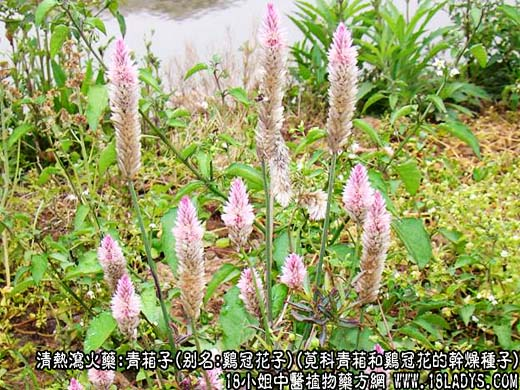
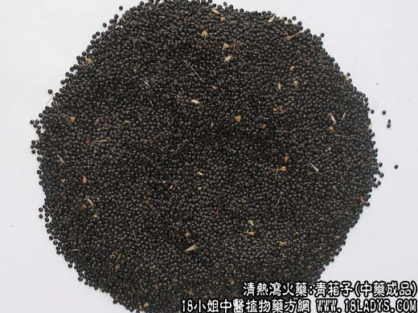
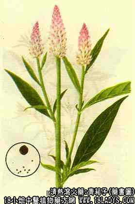

青葙子为较常用中药。《神农本草经》列为下品。
别名：野鸡冠花子，鸡冠花子。
来源：为苋科植物一年生草本青葙和鸡冠花的干燥种子。有野生，亦有栽培。
产地：全国各地均有生产。
性状鉴别：青葙种子和鸡冠花种子两者极相似。均呈扁圆形或双凸镜形，边缘较薄，中心较厚。直径约1~1.5毫米，厚约0.5毫米。色黑，平滑光亮。在扩大镜下观察可见表面有网状纹，网纹呈矩形或多角形，排列成整齐的同心环。基部稍下凹处为种脐，中央有稍突起的脊，种皮薄，剥去种皮，子仁黄白色，饱含油质。气微，味淡。以色黑亮者为佳。
主要成分：含脂肪油，其中主要为青葙子油脂。
功效与作用：中医实验认为有祛风热、清肝火和明目等作用，其原理大概与消炎作用有关。
炮制：生用。
性味：苦，微寒。
归经：入肝经。
功能：祛风热，清肝火，明目。
主治：风热目赤肿痛，翳障失明，皮肤风热，疮疡，瘙痒等症。
临床应用：用于与决明子基本相同，且两者常配伍同用，但总的来说，青葙子不如决明子常用。两者的微细区别是：决明子以治疗由风热引起的目赤肿痛为主（表症较明显）；青葙子以治疗由肝火引起的目赤肿痛为主（兼有口苦咽干、头胀目热、烦躁易怒等“肝火”症状）。从现代医学观点来看，上述两种症状都属急性结膜炎。又决明子略带补性，而青葙子则无补性。
1、用于治疗肝火所致目赤肿痛（急性结膜炎）。配菊花9g、龙胆草3g，水煎服。
2、用于治疗视物不清。古方即以青葙子配元明粉、羌活、枣仁等治疗视物模糊，眼前有暗影飘动。现代在古方基础上加减，制成青葙汤（慢性葡萄膜炎方），试用于治疗慢性葡萄膜炎，据初步观察，效果尚好，可控制炎症和提高视力。
使用注意：肝虚者不宜用；又用酒制过者较好。
用量：3~15g。
处方举例：青葙汤（慢性葡萄膜炎方）：青葙子15g，元明粉4.5g（冲），酸枣仁12g，密蒙花9g，决明子9g，茯苓12g，白扁豆15g，水煎服。
注：1、华北、西北等部分地区及京津两市，另习用一种青葙子，为苋科植物野苋菜和反枝苋的种子。本品与青葙子略似，但体形约小半倍，在扩大镜观察全体略似杏核，周边有一略便薄的环边，种脐处不下凹，而向外凸出呈一小尖。表面花纹点状呈放射状排列。
2、山西省部分地区另以藜科植物藜（灰菜）的种子作青葙子用。陕西、甘肃地区部分地区青葙子中也常混有藜的种子。本品形态与苋菜子相似。
以上两种药效是否与正品青葙子相同，还待进一步研究。